Promova wireframe galleryEmployee shell and overview
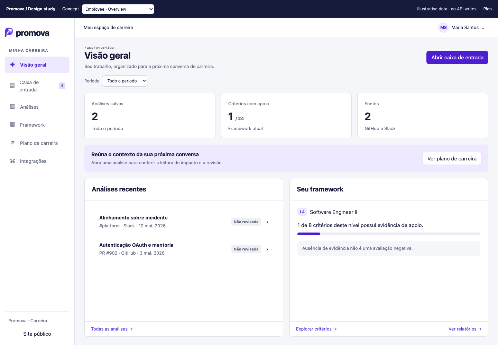
Bounded inbox and preview
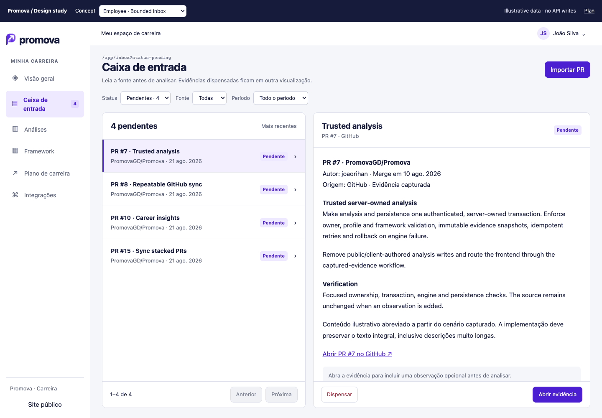
Focused evidence and analysis action
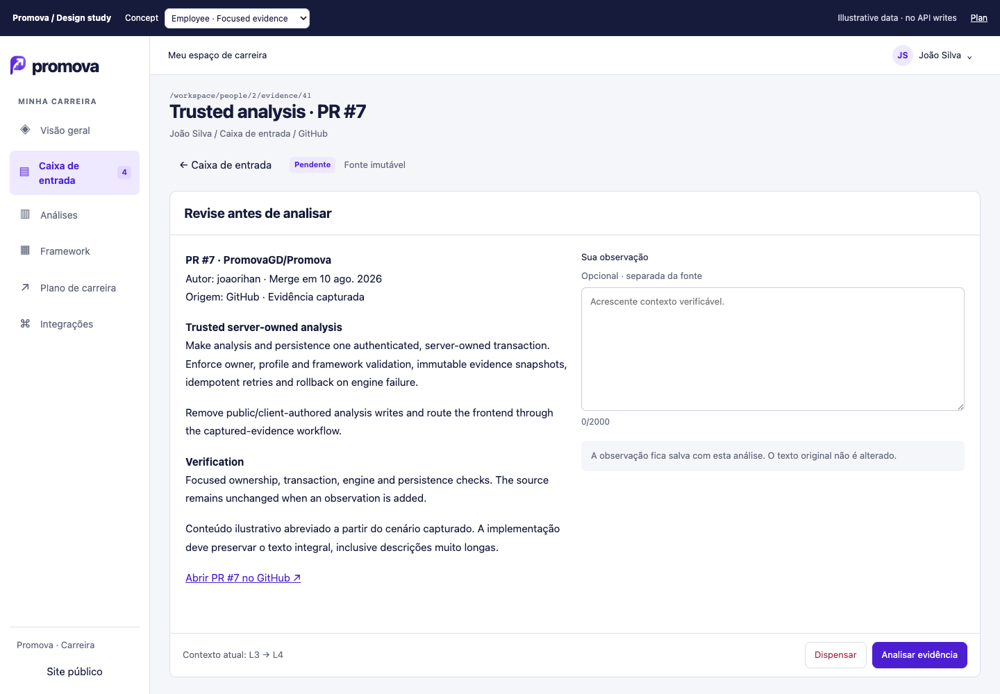
Saved analysis review history
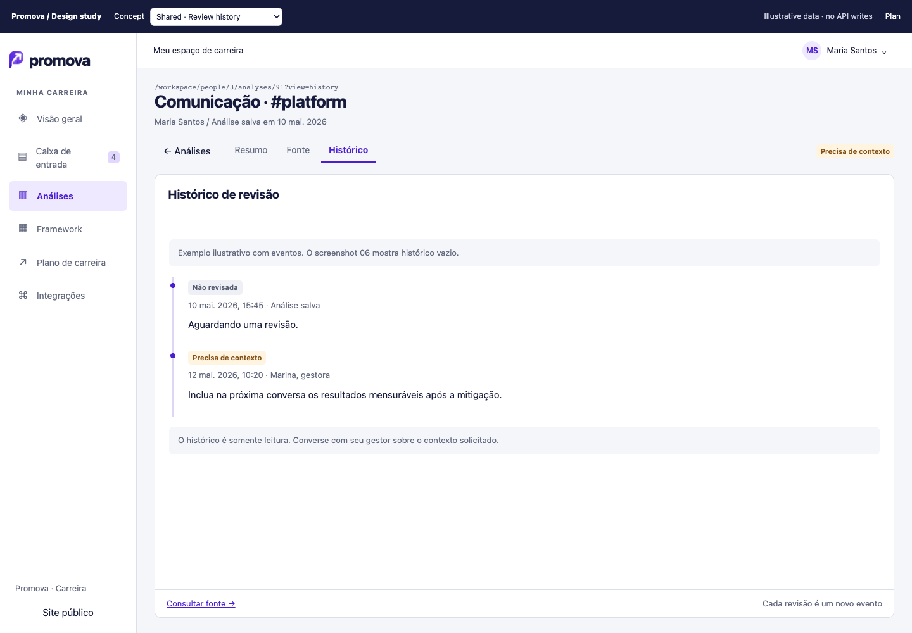
Employee career plan
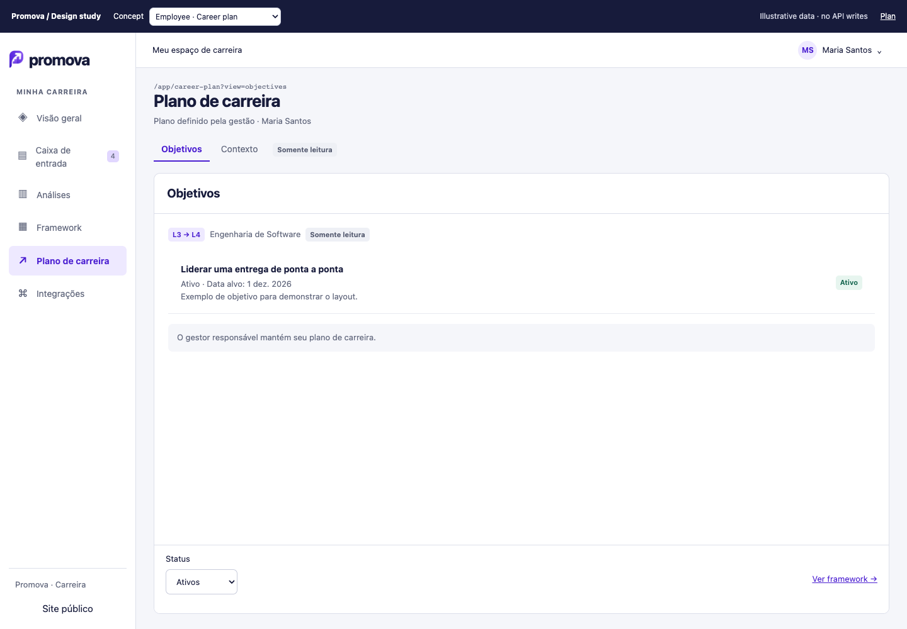
Manager shell and People workspace
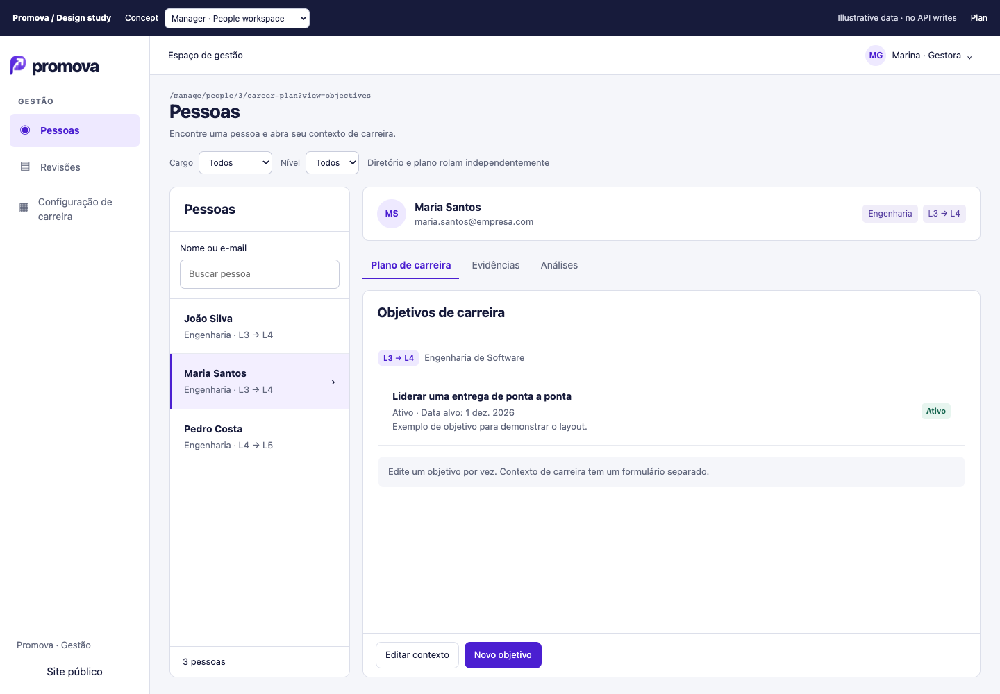
Manager review workflow
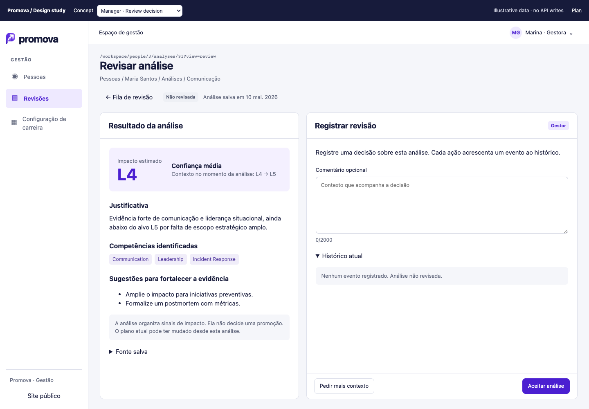
Career configuration
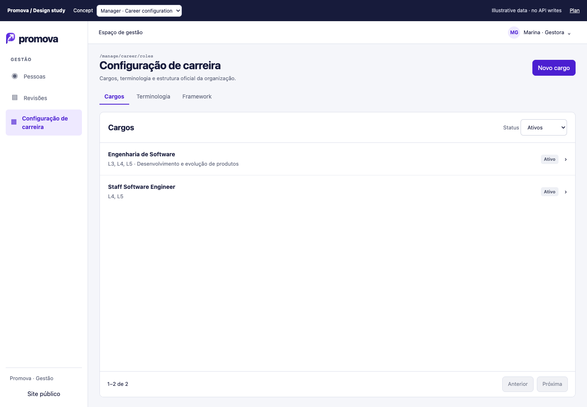
Official framework
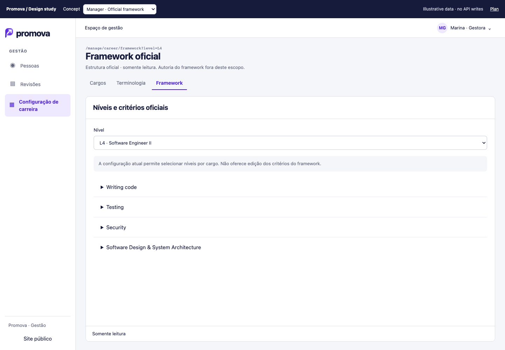
Loading
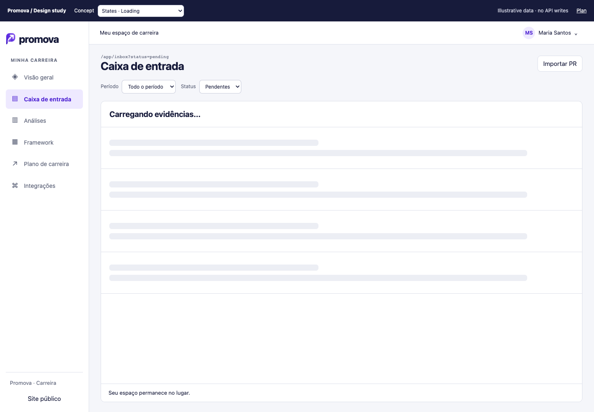
Empty
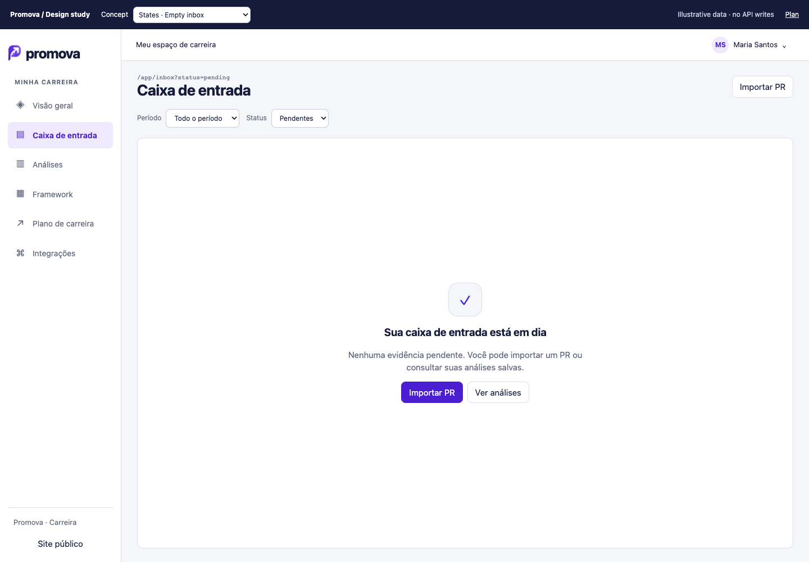
Recoverable error
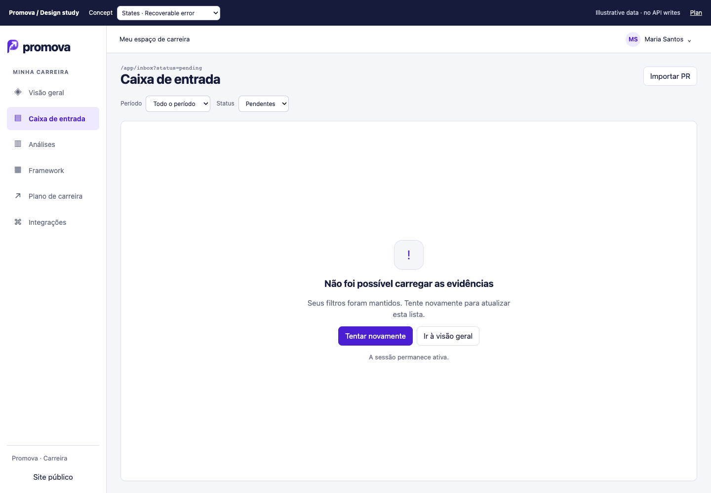
Mobile inbox
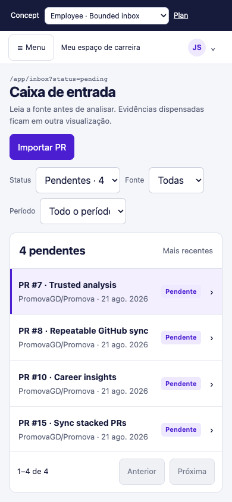
Mobile navigation drawer
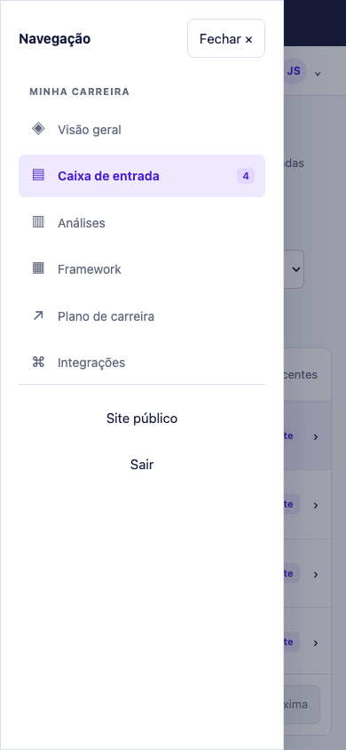
Mobile evidence workspace
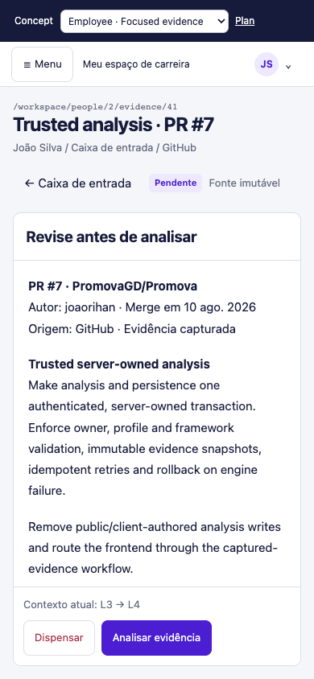
Mobile review decision
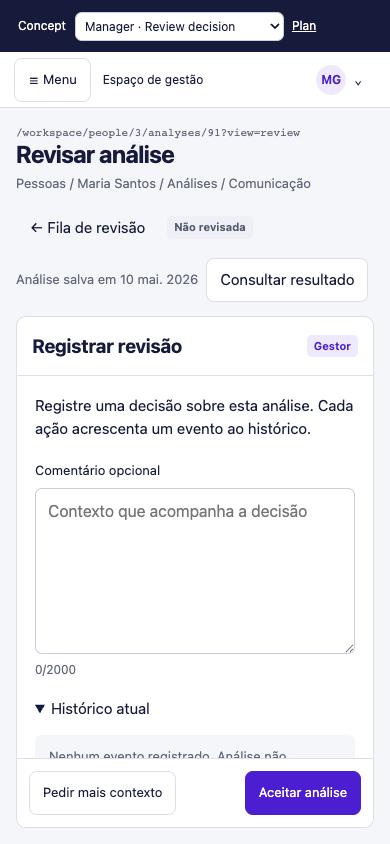